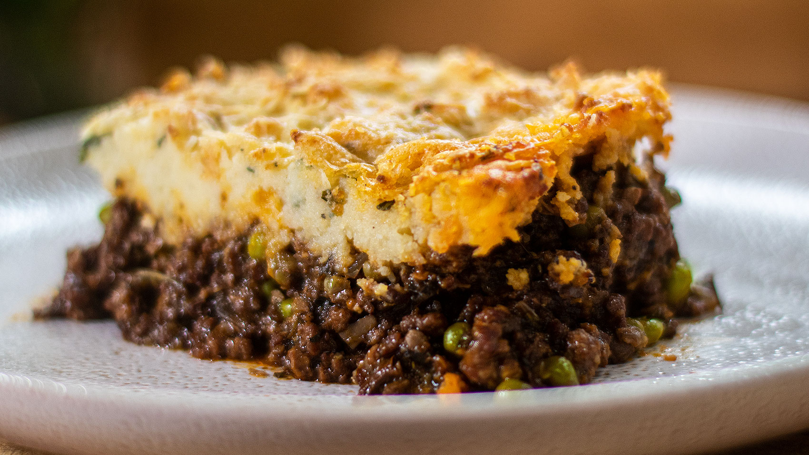

A classic winter warmer! Shepherd's Pie.

What’s the difference between Shepherd’s Pie and Cottage Pie??
Cottage Pie is made with beef and Shepherd’s Pie is made with lamb.
Shepherds herd sheep. Not cows. That’s how I remember it!! Other than beef
vs lamb, they are essentially exactly the same recipe. So a Shepherd’s Pie
made with beef is Cottage Pie, and Cottage Pie made with lamb is
Shepherd’s Pie!
What to serve with Shepherd’s Pie
When it comes to choosing sides for your Shepherd’s pie, try Glazed
Roasted Carrots or perhaps Sautéed Garlic Spinach. The only other thing
you need is a glass of red and a crackling fire…
Ingredients
- 1 1/2 tbsp olive oil
- 2 garlic cloves , minced
- 1 onion , finely chopped
- 1 carrot , finely chopped
- 1 rib celery , finely chopped
-
3/4 tsp each dried thyme and rosemary (or 2 sprigs fresh thyme + 1 sprig
rosemary)
- 750g (1.5 lb) ground lamb (mince) OR beef
- 1/4 cup (35g) flour , plain/all purpose
- 1/4 cup (55g) tomato paste
- 2 cups (500ml) beef stock / broth
- 1/2 cup (125ml) red wine (or water)
- 1 beef bouillon cube , crumbled
- 1 tbsp Worcestershire sauce
- 2 dried bay leaves
- 3/4 tsp cooking / kosher salt
- 1/2 tsp black pepper
- 1 cup frozen peas
Instructions
-
Heat oil in a large skillet over medium high heat. Add onion and garlic,
cook for 1 minute. Then add carrots, celery, thyme and rosemary. Cook
for 3 minutes or until softened and sweet.
-
Turn heat up to high. Add lamb and cook, breaking it up as you go, until
browned.
-
Add flour and mix in. Add tomato paste, broth, red wine, bouillon cube,
Worcestershire sauce and bay leaves. Stir well.
-
Bring to simmer, then turn down heat so it is simmering rapidly - I have
it on medium. Cook for 30 minutes, stirring occasionally, until it
reduces down to a thick gravy consistency (Note 1) (see video).
-
Add salt and pepper, taste, then add more if you like. Transfer Filling
to 1.5 litre / 1.5 quart pie baking dish. Stir through peas. Cover, then
refrigerate to cool for 1 - 2 hours or overnight (optional, Note 2)
Assemble:
- Preheat oven to 180C/350F.
-
Cook potatoes in boiling water for 15 minutes or until soft. Drain then
return to pot on turned off stove. Allow to steam dry for 30 seconds or
so (Note 3).
-
Add butter and mash until melted, then add milk, salt and pepper. Mash
until it's soft and smooth (ie spreadable, but not sloppy), adjusting
with a touch more milk if required.
-
Spread mash onto pie, use a fork to draw squiggles over the surface.
Sprinkle with parmesan, drizzle with butter.
-
Bake for 30 - 40 minutes or until deep golden on top and bubbling on the
edges. Stick a knife into the middle to ensure it is piping hot.
-
Stand for 5 minutes before serving, garnished with fresh thyme leaves if
desired.
Homepage